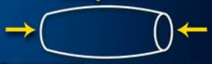

6. ESFUERZOS
La acción de las fuerzas sobre los cuerpos y su estructura provoca efectos internos en ellos.
EXPERIMENTA
-
Cógete los dedos índices y tira de ellos.
-
Junta las palmas de las manos y apriétalas.
a. ¿Qué sientes?
b. ¿Tienes la misma sensación en ambos casos?
Notas una tensión que aumenta según crece la fuerza que ejerces, ¿verdad? Además, el tipo de tensión es diferente en cada caso. Como consecuencia de aplicar unas fuerzas sobre nuestro cuerpo aparecen otras "internas" que tratan de contrarrestar el efecto de las primeras.

Los seres vivos notamos este efecto, que puede ir de lo apenas perceptible a lo doloroso. Los objetos no sienten dolor, pero las fuerzas provocan en ellos un efecto similar que les produce deformaciones. En ambos casos, esta tensión interna se denomina esfuerzo.
Las estructuras deben resistir diferentes tipos de fuerzas que intentan deformarlas o romperlas. Cuando una estructura soporta una fuerza, en su interior se generan unas tensiones llamadas esfuerzos. Según cómo actúan las fuerzas y cómo reacciona el material, existen varios tipos de esfuerzos importantes en tecnología y construcción.
Definición
Esfuerzo es la fuerza interna que aparece en un cuerpo al aplicarle fuerzas desde el exterior.
-
La función de las estructuras es soportar estos esfuerzos para no romperse ni deformarse demasiado.
-
La forma y material de cada elemento estructural determinan a qué tipo de esfuerzo resiste mejor.
Estos esfuerzos varían con la intensidad de la fuerza y su dirección y con la forma del objeto que la soporta. Podemos clasificar los esfuerzos según la dirección y el sentido en que actúan las fuerzas que los originan.
1. Tracción
¿Qué es?
Esfuerzo producido cuando las fuerzas tratan de estirar un cuerpo en direcciones opuestas.

- Fuerzas: Dos fuerzas opuestas, actuando hacia el exterior y en sentidos contrarios.
- Efecto: El cuerpo tiende a alargarse, aumentando su longitud.
- Ejemplos:
- Los tirantes de un puente colgante (estructura).
- La cuerda de una tienda de campaña tensada.
- Los tendones en el cuerpo al impulsar la pierna para saltar.
- El cable de un ascensor cuando sube una cabina.

2. Compresión
¿Qué es?

Esfuerzo que aparece cuando las fuerzas tratan de aplastar o comprimir un cuerpo.

- Fuerzas: Dos fuerzas opuestas, actuando hacia el interior y en sentidos contrarios.
- Efecto: El cuerpo tiende a acortarse, disminuyendo su longitud.
- Ejemplos:

- Un pilar soportando el techo de un edificio (estructura).
- Un ladrillo en la base de una pared.
- La pierna al aterrizar de un salto.
- Una columna en un templo griego o una presa.
3. Flexión
¿Qué es?
Esfuerzo al intentar doblar o curvar un elemento mediante fuerzas aplicadas en diferentes posiciones.
- Fuerzas: Varias fuerzas: unas empujan, otras tiran. Actúan en diferentes puntos de la pieza.
- Efecto: El cuerpo se curva: una zona se estira (tracción) y otra se aplasta (compresión).
- Ejemplos:
- Una viga que sostiene el suelo entre dos paredes (estructura).
- Un estante cargado de libros.
- Una rama cuando un niño se cuelga de ella.
- El tablero de un puente al pasar un camión pesado (estructura).
4. Torsión
¿Qué es?
 Esfuerzo que se da cuando intentan retorcer el elemento aplicando fuerzas opuestas en cada extremo.
Esfuerzo que se da cuando intentan retorcer el elemento aplicando fuerzas opuestas en cada extremo.

- Fuerzas: Dos fuerzas giratorias, cada una en sentido contrario, aplicadas en los extremos.
- Efecto: El cuerpo gira en espiral, como un tornillo o cuerda al torcerse.
- Ejemplos:

- El eje de una grúa giratoria al levantar cargas (estructura).
- Escurrir una toalla retorciéndola.
- Una barra de plastilina que se retuerce.
- La llave al abrir una puerta.
5. Cizalladura o cortadura
¿Qué es?
 Esfuerzo al aplicar dos fuerzas muy próximas en sentidos opuestos para intentar cortar el objeto.
Esfuerzo al aplicar dos fuerzas muy próximas en sentidos opuestos para intentar cortar el objeto.
- Fuerzas: Dos fuerzas paralelas y muy cercanas, una hacia arriba y otra hacia abajo.
- Efecto: El cuerpo se separa o corta en dos partes en el plano de acción de las fuerzas.
- Ejemplos:
- Un remache que une dos chapas metálicas y soporta que se deslicen entre sí (estructura).
- Las tijeras cortando papel.
- Un alambre al ser cortado por unos alicates.
- El tallo de una flor cortado con la mano.